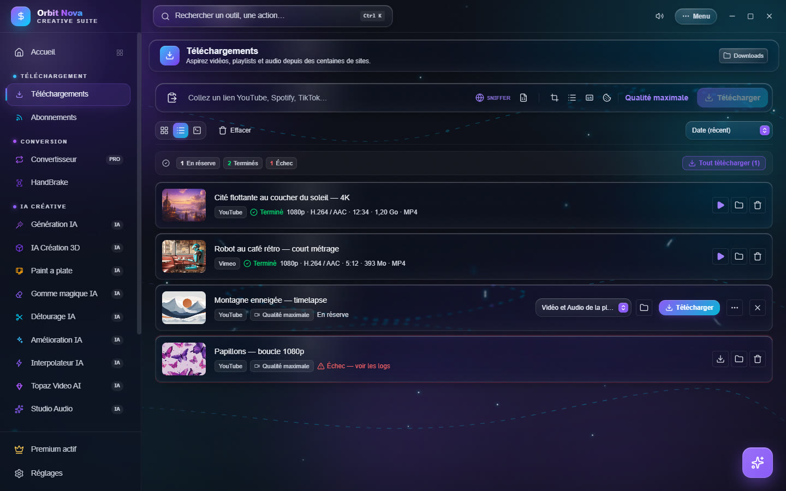
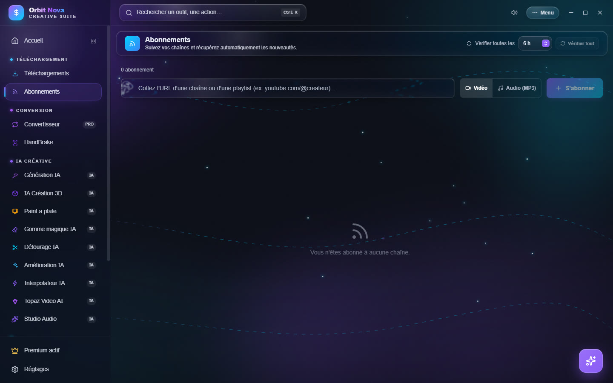

Téléchargements
Téléchargez seulement les contenus que vous avez le droit de copier : vos propres vidéos, des contenus libres de droits, ou pour un usage permis par la loi de votre pays.
Télécharger une vidéo
- Copiez le lien de la vidéo (YouTube, TikTok, Instagram, X, Vimeo, Twitch, SoundCloud… plusieurs centaines de sites sont reconnus).
- Dans l'onglet Téléchargements, collez-le dans la barre du haut (bouton presse-papiers à gauche, ou Ctrl+V). Orbit analyse le lien et affiche le titre et la miniature.
- Cliquez Télécharger pour lancer tout de suite, ou appuyez sur Entrée pour mettre en réserve et tout lancer plus tard avec Tout télécharger.


Les fichiers vont dans le dossier affiché en haut à droite (Downloads par défaut) ; cliquez dessus pour le changer. Chaque élément peut aussi avoir son propre dossier (icône dossier de la ligne).
La qualité et le format
Le bouton Qualité maximale, à droite de la barre, ouvre le choix du format :
- Télécharger l'audio uniquement ? : interrupteur pour ne garder que le son (MP3, FLAC, WAV, M4A, OGG) ;
- Format de téléchargement : de Vidéo et Audio de la plus haute qualité à 8K, 4K, 2K, 1080p, 720p, 480p, 360p, 144p, ou MP4 standard ;
- Miniature : Désactivée, Image à part, Intégrée à la vidéo ou Les deux, avec le format (JPG, PNG, WEBP) et la taille de l'image.
Ce choix s'applique aux prochains liens. Pour un élément en réserve, la liste déroulante de sa ligne change son format à lui seul.
Les icônes de la barre activent des options pour les prochains liens :
| Icône | Effet |
|---|---|
| SNIFFER | ouvre le navigateur intégré pour intercepter les vidéos cachées d'une page (voir plus bas) |
| Document | importe une playlist exportée en CSV (Exportify, TuneMyMusic, Soundiiz) |
| Image | miniature (réglée dans le menu de qualité) |
| Liste | télécharge toute la playlist au lieu d'une seule vidéo |
| CC | intègre les sous-titres dans le fichier |
| Cookie | utilise les cookies de votre navigateur (Chrome) pour les contenus qui demandent une connexion |
Les réglages permanents (H.264 forcé pour le montage, métadonnées, chapitres, SponsorBlock, sous-titres automatiques…) sont dans Réglages › Téléchargements, voir Réglages.
La liste des téléchargements
Chaque ligne affiche la source, l'état, puis la résolution, les codecs, la durée, la taille et le conteneur une fois le fichier prêt. Les boutons de droite changent selon l'état :
- En réserve : choisir le format, le dossier, Télécharger, ou … pour les Options avancées :
- Trimmer : ne garder qu'un passage (début et fin, par exemple
01:20et02:45) ; - Planifier : lancer le téléchargement à une heure donnée (Planifié à 23:00).
- Trimmer : ne garder qu'un passage (début et fin, par exemple
- En cours : pause, reprendre, annuler ; la ligne montre la vitesse et le temps restant.
- Terminé : Lire dans Orbit (lecteur intégré), ouvrir le dossier, supprimer de la liste.
- Fichier supprimé : le fichier n'est plus sur le disque ; Retélécharger le récupère.
- Échec — voir les logs : le journal explique l'erreur ; Réessayer relance.
En haut de la liste, les compteurs (En réserve, Terminés, Échec), le tri (Date, Nom, Taille), trois vues (grille, liste, compacte) et Effacer pour retirer les terminés.
Si Orbit ou Windows se ferme pendant un téléchargement, Orbit le reprend au prochain lancement là où il s'était arrêté.
Musique : Spotify, Deezer et CSV
Collez un lien Spotify (titre, album, playlist ou artiste) ou Deezer dans la même barre. Orbit lit la
liste des morceaux, retrouve chacun sur YouTube Music et l'enregistre avec son titre, son artiste, son album et
sa pochette (et les paroles synchronisées .lrc quand elles existent).
Spotify ne montre que les 100 premiers titres d'une playlist. Pour une playlist plus longue, exportez-la en CSV (avec Exportify, TuneMyMusic ou Soundiiz) puis importez le fichier avec l'icône Document de la barre.
Orbit ne contourne aucune protection : le son vient des versions publiques trouvées sur YouTube Music, pas de Spotify.
Twitch
Les VOD et clips Twitch se téléchargent en collant leur lien. Pour une VOD réservée aux abonnés, connectez-vous d'abord à votre compte Twitch dans le navigateur intégré (SNIFFER) : Orbit réutilise cette connexion.
Hébergeurs de fichiers
Les liens d'hébergeurs (1fichier, MediaFire, Pixeldrain, Gofile…) se collent aussi dans la barre. Orbit ouvre la page en arrière-plan, clique sur le bouton de téléchargement gratuit, attend le compte à rebours s'il y en a un, puis télécharge en plusieurs connexions quand le site l'accepte (souvent bien plus rapide qu'un navigateur). Si un captcha apparaît, la fenêtre s'affiche pour que vous le résolviez.
Les limites imposées par un site gratuit (attente, vitesse bridée) restent celles du site : Orbit ne les contourne pas.
Le navigateur intégré (Sniffer)
Certaines pages cachent leur vidéo (lecteurs intégrés, sites qui demandent une connexion). Cliquez SNIFFER : un navigateur s'ouvre dans Orbit. Allez sur la page, lancez la vidéo : Orbit détecte les flux (Flux intercepté) et vous propose de les télécharger. Les flux en morceaux (HLS, DASH) sont reconstitués en un seul fichier.
Abonnements
L'onglet Abonnements suit des chaînes ou des playlists et télécharge les nouvelles vidéos tout seul.
- Collez l'adresse d'une chaîne ou d'une playlist (par exemple
youtube.com/@createur). - Choisissez Vidéo ou Audio (MP3), puis S'abonner.


Pour chaque abonnement, réglez la Qualité, le Nombre de vidéos (les N dernières ou Toutes) et Sans Shorts ni lives. En haut, Vérifier toutes les fixe l'intervalle de vérification et Vérifier tout lance une vérification immédiate. Chaque abonnement peut être mis en pause, vérifié seul ou supprimé.
Pour garder vos abonnements en changeant de PC : Menu › Outils › Exporter/Sauvegarder les abonnements, puis Importer/Restaurer les abonnements sur l'autre PC.